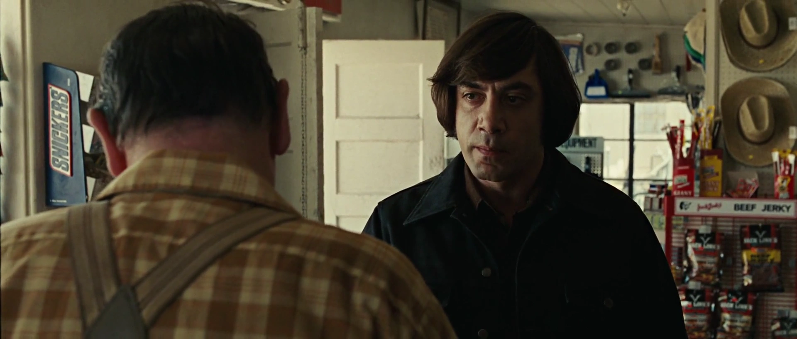
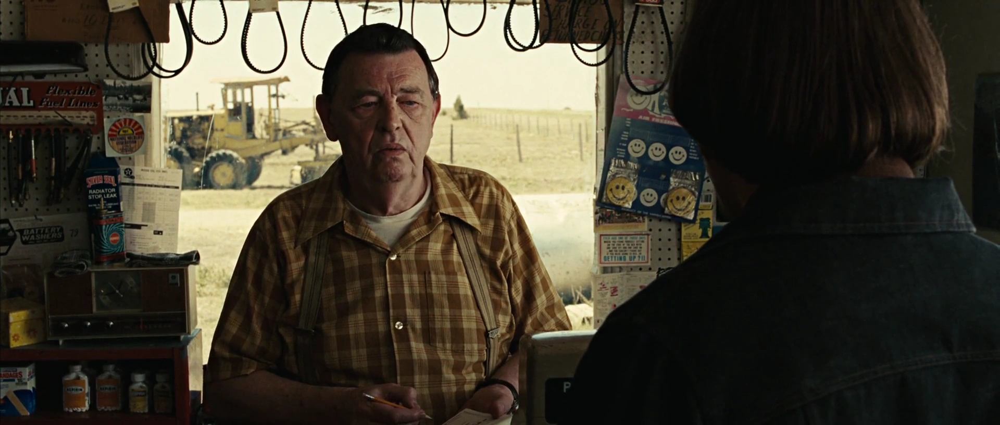
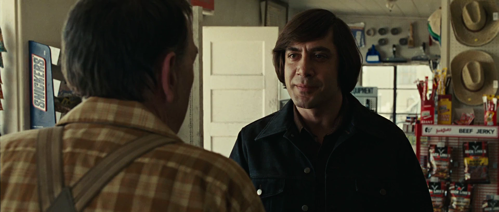
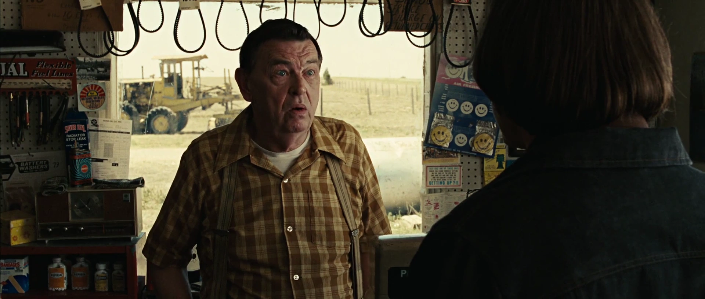
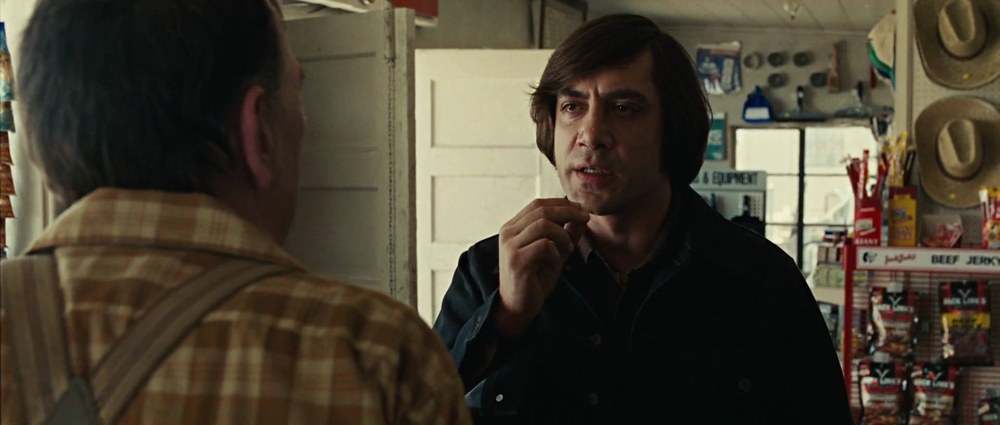
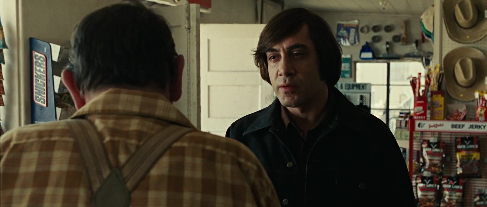
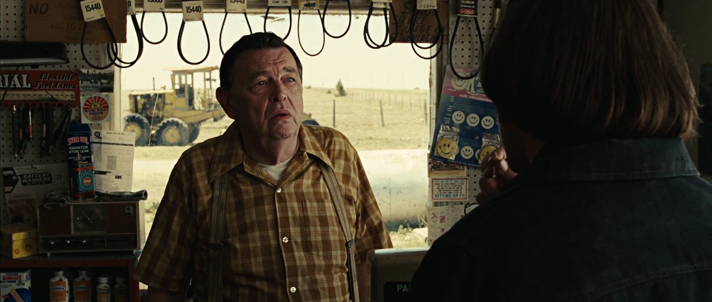
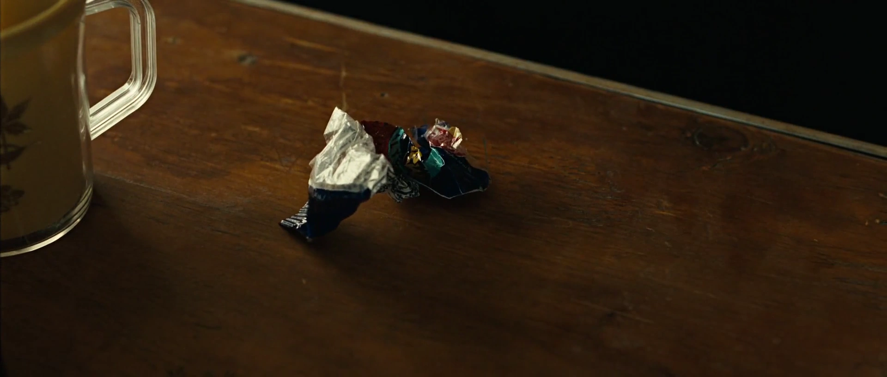
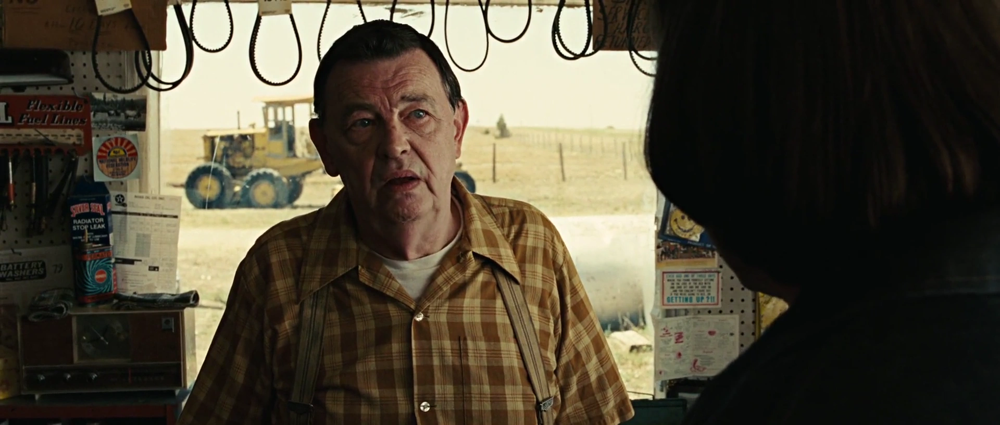
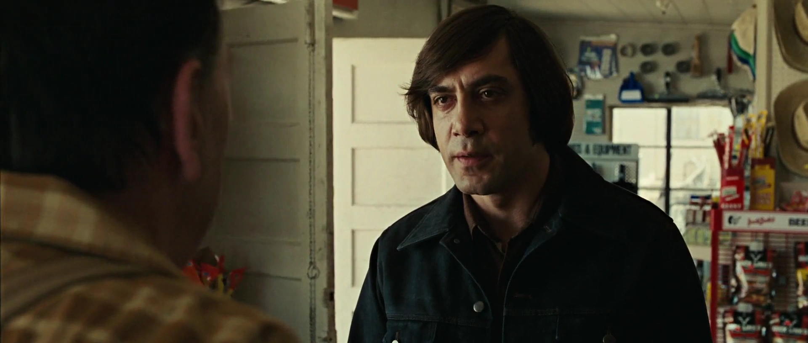

{kind=link}
| Abbrev | Film | Clip Start | Clip Stop | Duration |
|---|---|---|---|---|
| NoCountry | No Country for Old Men (2007) | 00:20:50.600 | 00:25:12.600 | 262 |
No Country for Old Men
Film Information
No Country for Old Men is a 2007 American neo-Western crime thriller film written and directed by Joel and Ethan Coen, based on Cormac McCarthy’s 2005 novel of the same name. Starring Tommy Lee Jones, Javier Bardem, and Josh Brolin, the film is set in the desert landscape of 1980 West Texas. The film follows three main characters: Llewelyn Moss (Brolin), a Vietnam War veteran and welder who stumbles upon a large sum of money in the desert; Anton Chigurh (Bardem), a hitman who is tasked with recovering the money; and Ed Tom Bell (Jones), a local sheriff investigating the crime. The film also stars Kelly Macdonald as Moss’s wife Carla Jean, and Woody Harrelson as a bounty hunter seeking Moss and the return of the $2 million.
All information in this section came from Wikipedia.
Clip Information
This clip shows a hitman getting gas at a gas station in Texas. He talks with the gas station owner and makes him guess the result of his coin toss.
| Characteristic | Value |
|---|---|
| Format | MPEG-4 |
| File Size | 48.4 MiB |
| Duration | 262.012 |
| Frame Rate | 23.976 |
| Video Width | 1920 |
| Video Height | 816 |
| Video BitRate | 1.4 MB/s |
| Audio Channels | 2 |
| Audio SamplingRate | 48000 |
| Audio BitRate | 128.0 kB/s |










Subtitles
The following wordcloud shows the words used in this clip, scaled by number of occurrences and colored by sentiment (orange = negative, green = positive, grey = neutral or unsure). Note that the words have been stemmed and lemmatized and stopwords have been removed.
{kind=link}
The following figure shows the estimated sentiment (VADER compound score) for each subtitle line (orange = negative, green = positive, grey = neutral or unsure).
{kind=link}
The table below shows all subtitles in this clip with the start and stop time of each subtitle’s appearance in seconds.
| Start | End | Subtitle |
|---|---|---|
| 8.846 | 9.686 | How much? |
| 9.886 | 11.366 | Sixty-nine cents. |
| 11.766 | 12.966 | And the gas. |
| 13.846 | 15.926 | Y'all getting any rain up your way? |
| 17.565 | 18.565 | What way would that be? |
| 18.645 | 20.285 | I seen you was from Dallas. |
| 22.805 | 28.405 | What business is it of yours where I'm from, friendo? |
| 31.165 | 32.565 | I didn't mean nothing by it. |
| 32.765 | 34.085 | Didn't mean nothing. |
| 34.285 | 36.565 | Just passing my time. |
| 38.925 | 42.205 | If you don't wanna accept that I don't know what else I can do for you. |
| 45.445 | 46.805 | Will there be something else? |
| 46.840 | 48.165 | I don't know. Will there? |
| 55.364 | 56.404 | Is something wrong? |
| 56.439 | 57.181 | With what? |
| 57.216 | 57.924 | With anything? |
| 59.724 | 60.964 | Is that what you're asking me? |
| 61.804 | 63.524 | Is there something wrong with anything? |
| 64.404 | 65.484 | Will there be anything else? |
| 65.524 | 66.564 | You already asked me that. |
| 70.844 | 72.764 | Well... I need to see about closing. |
| 73.204 | 74.444 | See about closing. |
| 74.564 | 75.009 | Yes sir. |
| 75.044 | 76.124 | What time do you close? |
| 76.159 | 77.361 | Now. We close now. |
| 77.396 | 78.529 | Now is not a time. |
| 78.564 | 79.764 | What time do you close? |
| 79.804 | 81.524 | Generally around dark. At dark. |
| 86.564 | 88.363 | You don't know what you're talking about, do you? |
| 88.398 | 88.963 | Sir? |
| 91.203 | 93.963 | I said you don't know what you're talking about. |
| 97.043 | 98.243 | What time do you go to bed? |
| 98.923 | 99.443 | Sir? |
| 99.643 | 101.363 | You're a bit deaf, aren't you? |
| 101.398 | 103.083 | I said what time do you go to bed? |
| 107.683 | 109.083 | Somewhere around 9:30. |
| 109.683 | 111.263 | I'd say around 9:30. |
| 111.298 | 112.808 | I could come back then. |
| 112.843 | 114.163 | Why would you be coming back? |
| 114.198 | 115.128 | We'd be closed. |
| 115.163 | 116.163 | Yeah. You said that. |
| 118.523 | 120.168 | Well... I got to close now. |
| 120.203 | 121.763 | You live in that house out back? |
| 123.043 | 124.882 | Yes I do. |
| 125.762 | 127.202 | You lived here all your life? |
| 128.722 | 132.602 | This is my wife's father's place. Originally. |
| 135.442 | 136.322 | You married into it. |
| 137.042 | 139.682 | We lived in Temple Texas for many years. |
| 141.162 | 142.602 | Raised a family there. |
| 143.402 | 144.607 | In Temple. |
| 144.642 | 146.762 | We come out here about four years ago. |
| 147.722 | 148.602 | You married into it. |
| 149.402 | 150.882 | If that's the way you wanna put it. |
| 151.162 | 152.842 | I don't have some way to put it. |
| 153.962 | 155.042 | That's the way it is. |
| 163.401 | 165.801 | What's the most you've ever lost in a coin toss? |
| 167.161 | 167.646 | Sir? |
| 167.681 | 171.001 | The most you ever lost in a coin toss. |
| 173.161 | 174.761 | I don't know. I couldn't say. |
| 177.881 | 178.721 | Call it. |
| 179.481 | 179.961 | Call it? |
| 180.081 | 180.601 | Yes. |
| 181.241 | 181.921 | For what? |
| 182.161 | 182.961 | Just call it. |
| 186.081 | 189.761 | Well, we need to know what we're calling it for here. |
| 189.796 | 190.801 | You need to call it. |
| 190.881 | 192.561 | I can't call it for you. |
| 193.401 | 194.640 | It wouldn't be fair. |
| 194.760 | 196.320 | I didn't put nothing up. |
| 196.355 | 197.600 | Yes, you did. |
| 198.240 | 199.920 | You've been putting it up your whole life. |
| 199.955 | 201.000 | You just didn't know it. |
| 202.280 | 204.160 | You know what date is on this coin? |
| 204.440 | 205.400 | No. |
| 205.440 | 206.360 | 1958. |
| 207.280 | 209.480 | It's been traveling twenty-two years to get here. |
| 210.000 | 210.960 | And now it's here. |
| 212.120 | 213.320 | And it's either heads or tails. |
| 214.840 | 216.080 | And you have to say. Call it. |
| 216.360 | 219.440 | Look... I need to know what I stand to win. |
| 219.840 | 220.600 | Everything. |
| 221.960 | 222.445 | How's that? |
| 222.480 | 224.640 | You stand to win everything. Call it. |
| 229.440 | 232.559 | Alright. Heads then. |
| 237.319 | 238.239 | Well done. |
| 240.759 | 241.559 | Don't put it in your pocket. |
| 241.679 | 242.564 | Sir? |
| 242.599 | 244.639 | Don't put it in your pocket. It's your lucky quarter. |
| 246.919 | 248.039 | Where you want me to put it? |
| 248.074 | 249.159 | Anywhere not in your pocket. |
| 250.399 | 253.479 | Or it'll be mixed in with the others and become just a coin. |
| 257.959 | 258.519 | Which it is. |
Holistic Ratings
A total of 73 participants watched this film clip and then provided holistic ratings on how the entire clip made them feel. These holistic ratings were completed using five Positive Affect items (i.e., alert, determined, enthusiastic, excited, inspired) and five Negative Affect items (i.e., afraid, distressed, nervous, scared, upset), each rated on an ordinal scale from 0 to 4. The plot below shows the distribution of scale scores (boxplot plus individual ratings).
{kind=link}
Dynamic Ratings
A total of 72 participants watched this film clip and used the CARMA software to provide continuous (i.e., second-by-second) ratings of how it made them feel. These continuous ratings were made on a single emotional valence scale ranging from -4 (very negative) to 4 (very positive).
Chromodoris Plot
We can plot the distribution of all valence ratings per second of the film clip to get a sense of how its emotional tone changes over time. The solid black line represents the mean of all ratings and the yellow, green, and purple ribbons represent the central 50%, 70%, and 90% of the ratings, respectively.
{kind=link}
Inter-Rater Reliability
A Bayesian generalizability study was used to decompose the variance in ratings of this video clip into the following components: timepoint variance (in average ratings of each second, across raters), rater variance (in average ratings from each rater, across seconds), and residual variance (including second-by-rater interactions and measurement error). The lower and upper columns in the table below represent the boundaries of the 95% equal-tail credible interval. Note that we dropped the first 10 seconds of each clip (as rater “warmup” time).
| Component | Term | Estimate | Lower | Upper | Percent |
|---|---|---|---|---|---|
| Rater | Variance | 1.062 | 0.812 | 1.577 | 0.582 |
| Timepoint | Variance | 0.170 | 0.143 | 0.208 | 0.093 |
| Residual | Variance | 0.591 | 0.579 | 0.603 | 0.324 |
From these variance components, we can estimate inter-rater reliability of the ratings. There are many formulations of the two-way intraclass correlation (ICC), but the most relevant to our purposes here is the balanced average-measures consistency formulation or ICC(C,k).
| Term | Estimate | Lower | Upper | Raters | Error |
|---|---|---|---|---|---|
| ICC(C,k) | 0.954 | 0.946 | 0.962 | 72 | Relative |
Below, we can also visualize the posterior distributions of each of these parameters. Values with higher posterior density are more probable.
{kind=link}